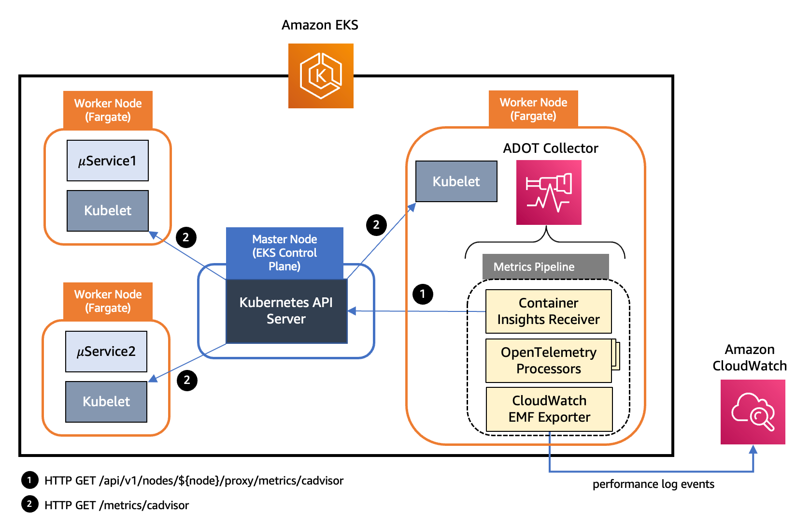
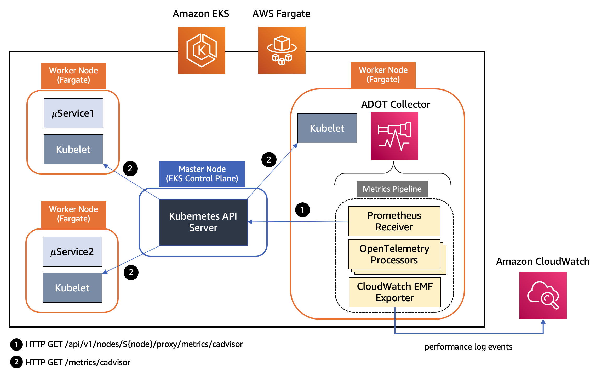
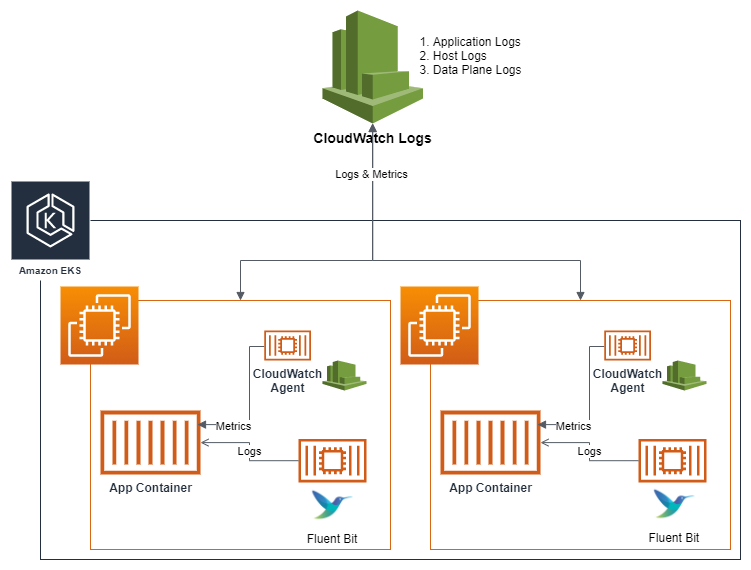
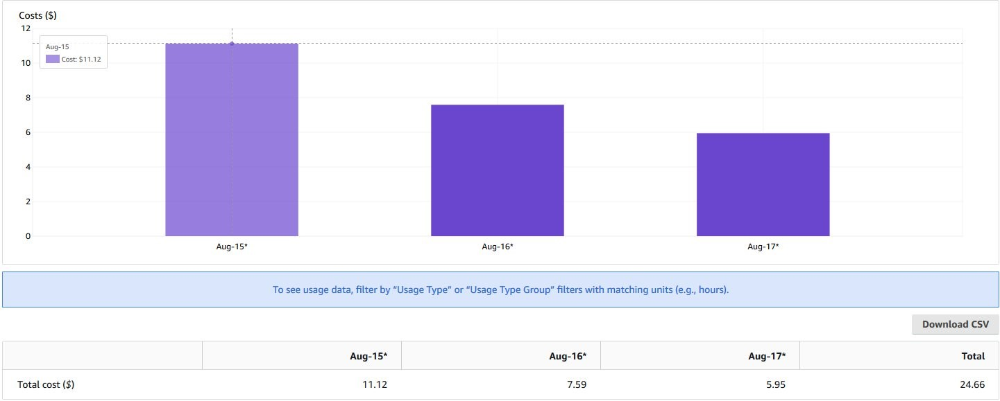

Amazon CloudWatch Container Insights¶
このオブザーバビリティのベストプラクティスガイドのセクションでは、Amazon CloudWatch Container Insights に関連する次のトピックを深掘りします。
- Amazon CloudWatch Container Insights の概要
- AWS Distro for OpenTelemetry での Amazon CloudWatch Container Insights の使用
- Amazon EKS 用 CloudWatch Container Insights の Fluent Bit インテグレーション
- Amazon EKS での Container Insights によるコスト削減
- EKS ブループリントを使用した Container Insights のセットアップ
はじめに¶
Amazon CloudWatch Container Insights は、コンテナ化されたアプリケーションとマイクロサービスからメトリクスとログを収集、集約、要約するのに役立ちます。メトリクスデータは、組み込みメトリクスフォーマットを使用してパフォーマンスログイベントとして収集されます。これらのパフォーマンスログイベントは、高基数データを大規模に取り込み、保存できるように構造化された JSON スキーマを使用します。このデータから、CloudWatch はクラスター、ノード、Pod、タスク、サービスレベルで CloudWatch メトリクスとして集計メトリクスを作成します。Container Insights が収集するメトリクスは、CloudWatch の自動ダッシュボードで利用できます。Container Insights は、セルフマネージドノードグループ、マネージドノードグループ、AWS Fargate プロファイルを持つ Amazon EKS クラスターで利用できます。
コスト最適化の観点から、Container Insights のコストを管理するのに役立てるために、CloudWatch はログデータから可能な限りのすべてのメトリクスを自動的に作成しません。ただし、CloudWatch Logs Insights を使用して生のパフォーマンスログイベントを分析することで、追加のメトリクスとより詳細な粒度のメトリクスを表示できます。Container Insights によって収集されたメトリクスは、カスタムメトリクスとして課金されます。CloudWatch の料金について詳しくは、Amazon CloudWatch 料金 を参照してください。
Amazon EKS では、Container Insights はクラスター内のすべての実行中コンテナを検出するために、Amazon Elastic Container Registry によって提供されるコンテナ化された CloudWatch エージェント バージョンを使用します。次に、パフォーマンススタックのすべてのレベルでパフォーマンスデータを収集します。Container Insights は、収集するログとメトリクスの暗号化を AWS KMS キーでサポートしています。この暗号化を有効にするには、Container Insights データを受信するロググループに対して、AWS KMS 暗号化を手動で有効にする必要があります。これにより、CloudWatch Container Insights は提供された AWS KMS キーを使用してこのデータを暗号化します。対称キーのみがサポートされており、非対称 AWS KMS キーはロググループの暗号化にはサポートされていません。Container Insights は Linux インスタンスでのみサポートされています。Amazon EKS 用の Container Insights は、これらの AWS リージョンでサポートされています。
AWS Distro for OpenTelemetry を使用した Amazon CloudWatch Container Insights¶
ここからは、Amazon EKS ワークロードからコンテナインサイトメトリクスの収集を有効にするオプションの1つである AWS Distro for OpenTelemetry (ADOT) について詳しく見ていきます。AWS Distro for OpenTelemetry (ADOT) は、OpenTelemetry プロジェクトの AWS サポートのセキュアなディストリビューションです。ADOT を使用すると、ユーザーはアプリケーションに 1 回のインスツルメンテーションだけで、相関メトリクスとトレースを複数のモニタリングソリューションに送信できます。ADOT が CloudWatch Container Insights をサポートすることで、Amazon Elastic Cloud Compute (Amazon EC2) 上で実行されている Amazon EKS クラスターから CPU、メモリ、ディスク、ネットワークの使用状況などのシステムメトリクスを収集でき、Amazon CloudWatch エージェントと同じエクスペリエンスを提供します。ADOT Collector は現在、Amazon EKS の CloudWatch Container Insights と Amazon EKS 用の Fargate プロファイルのサポートが利用できます。お客様は現在、Amazon EKS クラスターにデプロイされた Pod の CPU およびメモリの使用状況などのコンテナーおよび Pod メトリクスを収集し、CloudWatch ダッシュボードで確認できるようになりました。これにより、トラフィックに対応してスケールアップまたはスケールダウンを決定し、コストを節約できます。
ADOT Collector には、パイプラインの概念があり、レシーバー、プロセッサー、エクスポーターという 3 つの主要なコンポーネントタイプで構成されます。レシーバー は、データが Collector に入る方法です。指定された形式でデータを受け入れ、内部形式に変換し、パイプラインで定義されている プロセッサー と エクスポーター に渡します。プルベースまたはプッシュベースのいずれかです。プロセッサーは、受信とエクスポートの間でバッチ処理、フィルタリング、データ変換などのタスクを実行するために使用されるオプションのコンポーネントです。エクスポーターは、メトリクス、ログ、トレースを送信する宛先を決定するために使用されます。Collector アーキテクチャでは、YAML 設定を介してそのようなパイプラインの複数のインスタンスを定義できます。次の図は、Amazon EKS と Amazon EKS with Fargate プロファイルにデプロイされた ADOT Collector インスタンスのパイプラインコンポーネントを示しています。

図: Amazon EKS にデプロイされた ADOT Collector インスタンスのパイプラインコンポーネント
上記のアーキテクチャでは、パイプラインで AWS Container Insights Receiver のインスタンスを使用し、Kubelet から直接メトリクスを収集しています。AWS Container Insights Receiver (awscontainerinsightreceiver) は、CloudWatch Container Insights をサポートする AWS 専用のレシーバーです。CloudWatch Container Insights は、コンテナ化されたアプリケーションとマイクロサービスからメトリクスとログを収集、集計、要約します。データは 埋め込みメトリックフォーマット を使用してパフォーマンスログイベントとして収集されます。EMF データから、Amazon CloudWatch はクラスター、ノード、Pod、タスク、サービスレベルで集計された CloudWatch メトリクスを作成できます。以下は、awscontainerinsightreceiver の設定例です。
receivers:
awscontainerinsightreceiver:
# all parameters are optional
collection_interval: 60s
container_orchestrator: eks
add_service_as_attribute: true
prefer_full_pod_name: false
add_full_pod_name_metric_label: false
これは、上記の構成を使用して Collector を DaemonSet として Amazon EKS にデプロイすることを意味します。このレシーバーから Kubelet から直接収集されるより完全なメトリクスセットにもアクセスできます。クラスター内のすべてのノードからリソースメトリクスを収集するには、ADOT Collector のインスタンスを複数持つことで十分です。ADOT collector のインスタンスが 1 つだけでは、高負荷時に圧倒される可能性があるため、常に複数のコレクターをデプロイすることをおすすめします。

図: Amazon EKS with Fargate プロファイルにデプロイされた ADOT Collector インスタンスのパイプラインコンポーネント
上記のアーキテクチャでは、Kubernetes クラスターのワーカーノード上の kubelet は、/metrics/cadvisor エンドポイントで CPU、メモリ、ディスク、ネットワークの使用状況などのリソースメトリクスを公開します。ただし、EKS Fargate ネットワーキングアーキテクチャでは、Pod が直接そのワーカーノード上の kubelet に到達することは許可されていません。したがって、ADOT Collector は Kubernetes API サーバーを呼び出して、ワーカーノード上の kubelet への接続をプロキシし、そのノード上のワークロードの kubelet の cAdvisor メトリクスを収集します。これらのメトリクスは Prometheus 形式で利用できるようになっています。したがって、コレクターは Prometheus サーバーのドロップイン置換として Prometheus Receiver のインスタンスを使用し、Kubernetes API サーバーエンドポイントからこれらのメトリクスをスクレイピングします。Kubernetes のサービスディスカバリを使用すると、レシーバーは EKS クラスター内のすべてのワーカーノードを検出できます。したがって、ADOT Collector のインスタンスを複数持つことで、クラスター内のすべてのノードからリソースメトリクスを収集するのに十分です。ADOT collector のインスタンスが 1 つだけでは、高負荷時に圧倒される可能性があるため、常に複数のコレクターをデプロイすることをおすすめします。
メトリクスは、フィルタリング、名前変更、データ集計と変換などを実行する一連のプロセッサを経由します。上記の Amazon EKS 用 ADOT Collector インスタンスのパイプラインで使用されるプロセッサのリストは次のとおりです。
- Filter Processor は、AWS OpenTelemetry ディストリビューションの一部で、名前に基づいてメトリクスを含めたり除外したりします。メトリクス収集パイプラインの一部として使用して、不要なメトリクスをフィルタリングできます。たとえば、Container Insights がネットワーク用のプレフィックス
pod_networkを除く、プレフィックスpod_を持つ Pod レベルのメトリクスのみを収集する場合を想定します。
# filter out only renamed metrics which we care about
filter:
metrics:
include:
match_type: regexp
metric_names:
- new_container_.*
- pod_.*
- Metrics Transform Processor を使用して、メトリクスの名前変更、ラベルキーと値の追加、名前変更、削除を実行できます。また、ラベルまたはラベル値にわたるメトリクスのスケーリングと集計を実行できます。
metricstransform/rename:
transforms:
- include: container_spec_cpu_quota
new_name: new_container_cpu_limit_raw
action: insert
match_type: regexp
experimental_match_labels: {"container": "\\S"}
- Cumulative to Delta Processor は、単調増加の累積和メトリクスとヒストグラムメトリクスを単調増加のデルタメトリクスに変換します。単調でない合計と指数ヒストグラムは除外されます。
` # convert cumulative sum datapoints to delta
cumulativetodelta:
metrics:
- pod_cpu_usage_seconds_total
- pod_network_rx_errors`
- Delta to Rate Processor は、デルタ和メトリクスをレートメトリクスに変換します。このレートはゲージです。
` # convert delta to rate
deltatorate:
metrics:
- pod_memory_hierarchical_pgfault
- pod_memory_hierarchical_pgmajfault
- pod_network_rx_bytes
- pod_network_rx_dropped
- pod_network_rx_errors
- pod_network_tx_errors
- pod_network_tx_packets
- new_container_memory_pgfault
- new_container_memory_pgmajfault
- new_container_memory_hierarchical_pgfault
- new_container_memory_hierarchical_pgmajfault`
- Metrics Generation Processor を使用すると、指定されたルールに従って既存のメトリクスから新しいメトリクスを作成できます。
experimental_metricsgeneration/1:
rules:
- name: pod_memory_utilization_over_pod_limit
unit: Percent
type: calculate
metric1: pod_memory_working_set
metric2: pod_memory_limit
operation: percent
パイプラインの最終コンポーネントは AWS CloudWatch EMF Exporter で、メトリクスを埋め込みメトリックフォーマット (EMF) に変換してから、PutLogEvents API を使用して直接 CloudWatch Logs に送信します。ADOT Collector は、Amazon EKS 上で実行されている各ワークロードについて、次のメトリクスのリストを CloudWatch に送信します。
- pod_cpu_utilization_over_pod_limit
- pod_cpu_usage_total
- pod_cpu_limit
- pod_memory_utilization_over_pod_limit
- pod_memory_working_set
- pod_memory_limit
- pod_network_rx_bytes
- pod_network_tx_bytes
各メトリクスは、次のディメンションセットに関連付けられ、ContainerInsights という名前空間の CloudWatch で収集されます。
- ClusterName, LaunchType
- ClusterName, Namespace, LaunchType
- ClusterName, Namespace, PodName, LaunchType
さらに、ADOT の Container Insights Prometheus サポートとCloudWatch Container Insights を使用して Amazon EKS リソースメトリクスを視覚化するための Amazon EKS への ADOT コレクターのデプロイについて学習して、Amazon EKS クラスターに ADOT コレクターパイプラインを設定し、CloudWatch Container Insights で Amazon EKS リソースメトリクスを視覚化する方法を理解してください。
Amazon EKS の CloudWatch Container Insights との Fluent Bit インテグレーション¶
Fluent Bit は、オープンソースのマルチプラットフォームなログプロセッサおよびフォワーダで、さまざまなソースからデータとログを収集し、CloudWatch Logs を含むさまざまなデスティネーションに統合して送信できます。また、Docker および Kubernetes 環境と完全に互換性があります。新しくリリースされた Fluent Bit デーモンセットを使用すると、EKS クラスターからコンテナログを CloudWatch Logs に送信して、ログの保存と分析ができます。
軽量な特性により、EKS ワーカーノード上の Container Insights でデフォルトのログフォワーダとして Fluent Bit を使用することで、アプリケーションログを効率的かつ信頼性高く CloudWatch Logs にストリーミングできます。Fluent Bit を使用することで、Container Insights はポッドレベルの CPU およびメモリ利用効率の観点から、リソース効率的な方法で大規模なビジネスクリティカルなログを配信できます。つまり、以前使用されていたログフォワーダである FluentD と比較して、Fluent Bit はリソースフットプリントが小さく、その結果、メモリおよび CPU の点でよりリソース効率が高いということです。一方、Fluent Bit および関連プラグインを含む AWS for Fluent Bit イメージ は、AWS エコシステム内で統一されたエクスペリエンスを提供することを目的としているため、新しい AWS 機能をより迅速に採用する追加の柔軟性を Fluent Bit に提供します。
以下のアーキテクチャは、Amazon EKS 用 CloudWatch Container Insights で使用される個々のコンポーネントを示しています。

図: Amazon EKS 用 CloudWatch Container Insights で使用される個々のコンポーネント
コンテナを使用する場合、可能な限り Docker JSON ロギングドライバを使用して、アプリケーションログを含めてすべてのログを標準出力(stdout)と標準エラー出力(stderr)を介してプッシュすることをお勧めします。このため、EKS ではロギングドライバがデフォルトで構成されており、コンテナ化されたアプリケーションが stdout または stderr に書き込むものはすべて、ワーカーノードの “/var/log/containers" 以下の JSON ファイルにストリーミングされます。Container Insights はこれらのログをデフォルトで 3 つの異なるカテゴリに分類し、Fluent Bit 内および CloudWatch Logs 内の独立したロググループ内にカテゴリごとに専用の入力ストリームを作成します。これらのカテゴリは以下のとおりです。
- アプリケーションログ:
“/var/log/containers/*.log"以下に保存されているすべてのアプリケーションログは、専用の/aws/containerinsights/Cluster_Name/applicationロググループにストリーミングされます。kube-proxy や aws-node ログなどの非アプリケーションログはデフォルトで除外されます。ただし、CoreDNS ログなどの追加の Kubernetes アドオンログも処理され、このロググループにストリーミングされます。 - ホストログ: 各 EKS ワーカーノードのシステムログは、
/aws/containerinsights/Cluster_Name/hostロググループにストリーミングされます。これらのシステムログには、“/var/log/messages,/var/log/dmesg,/var/log/secure”ファイルの内容が含まれます。コンテナ化されたワークロードはステートレスで動的な性質があるため、EKS ワーカーノードはスケーリングアクティビティ中に頻繁に終了されることを考えると、Fluent Bit でこれらのログをリアルタイムでストリーミングし、ノードが終了した後でも CloudWatch Logs でこれらのログを利用できるようにすることは、EKS ワーカーノードの観測可能性とヘルスモニタリングの点で重要です。また、多くの場合ワーカーノードにログインせずにクラスタの問題をデバッグまたはトラブルシューティングできるようになり、これらのログをより体系的な方法で分析できます。 - データプレーンログ: EKS はすでに コントロールプレーンログ を提供しています。Container Insights と Fluent Bit のインテグレーションにより、実行中の Pod を維持管理する責任があるすべてのワーカーノード上で実行される EKS データプレーンコンポーネントによって生成されるログがデータプレーンログとしてキャプチャされます。これらのログも
‘/aws/containerinsights/Cluster_Name/dataplaneの専用 CloudWatch ロググループにストリーミングされます。kube-proxy、aws-node、Docker ランタイムのログがこのロググループに保存されます。コントロールプレーンログに加えて、CloudWatch Logs にデータプレーンログを保存することで、EKS クラスターの完全な画像を提供するのに役立ちます。
さらに、Fluent Bit 構成、Fluent Bit モニタリング、ログ分析などのトピックの詳細については、Amazon EKS との Fluent Bit インテグレーション をご覧ください。
Amazon EKS でのコンテナインサイトによるコスト削減¶
デフォルトの構成では、Container Insights レシーバーは レシーバーのドキュメント で定義されているメトリクスの完全なセットを収集します。収集されるメトリクスとディメンションの数が多く、大規模なクラスタの場合、メトリクスの取り込みとストレージのコストが大幅に増加します。ADOT Collector を構成して、価値のあるメトリクスのみを送信し、コストを節約する 2 つの異なるアプローチを示します。
プロセッサの使用¶
上記で説明したように、OpenTelemetry プロセッサを導入して、メトリクスや属性をフィルタリングし、EMF ログ のサイズを削減するアプローチです。ここでは、Filter と Resource という 2 つのプロセッサの基本的な使用方法を示します。
Filter プロセッサ は、otel-agent-conf という ConfigMap に含めることができます。
processors:
# filter processors example
filter/include:
# any names NOT matching filters are excluded from remainder of pipeline
metrics:
include:
match_type: regexp
metric_names:
# re2 regexp patterns
- ^pod_.*
filter/exclude:
# any names matching filters are excluded from remainder of pipeline
metrics:
exclude:
match_type: regexp
metric_names:
- ^pod_network.*
Resource プロセッサ も AWS OpenTelemetry Distro に組み込まれており、不要なメトリック属性を削除するために使用できます。たとえば、EMF ログから Kubernetes と Sources フィールドを削除したい場合は、リソースプロセッサをパイプラインに追加できます。
# resource processors example
resource:
attributes:
- key: Sources
action: delete
- key: kubernetes
action: delete
メトリクスとディメンションのカスタマイズ¶
このアプローチでは、CloudWatch EMF エクスポーターを設定して、CloudWatch Logs に送信したいメトリクスのセットのみを生成するようにします。CloudWatch EMF エクスポーターの設定の metric_declaration セクションを使用して、エクスポートしたいメトリクスとディメンションのセットを定義できます。たとえば、デフォルトの設定から pod メトリクスのみを保持できます。この metric_declaration セクションは次のようになり、他のディメンションを気にしない場合はディメンションセットを [PodName, Namespace, ClusterName] のみにしてメトリクス数を減らすことができます。
awsemf:
namespace: ContainerInsights
log_group_name: '/aws/containerinsights/{ClusterName}/performance'
log_stream_name: '{NodeName}'
resource_to_telemetry_conversion:
enabled: true
dimension_rollup_option: NoDimensionRollup
parse_json_encoded_attr_values: [Sources, kubernetes]
# Customized metric declaration section
metric_declarations:
# pod metrics
- dimensions: [[PodName, Namespace, ClusterName]]
metric_name_selectors:
- pod_cpu_utilization
- pod_memory_utilization
- pod_cpu_utilization_over_pod_limit
- pod_memory_utilization_over_pod_limit
この設定では、デフォルトの設定の複数のディメンションに対する 55 種類の異なるメトリクスではなく、単一のディメンション [PodName, Namespace, ClusterName] 内の次の 4 つのメトリクスが生成され、ストリーミングされます。
- pod_cpu_utilization
- pod_memory_utilization
- pod_cpu_utilization_over_pod_limit
- pod_memory_utilization_over_pod_limit
この設定により、デフォルトで設定されているすべてのメトリクスではなく、関心のあるメトリクスのみを送信できます。その結果、Container Insights のメトリックインジェストコストを大幅に削減できます。この柔軟性を持つことで、Container Insights の顧客はエクスポートされるメトリクスを高度に制御できます。awsemf エクスポーターの設定を変更してメトリクスをカスタマイズすることも非常に柔軟であり、送信したいメトリクスとそのディメンションの両方をカスタマイズできます。これは、CloudWatch Logs に送信されるログにのみ適用されることに注意してください。
上記で説明した 2 つのアプローチは相互に排他的ではありません。実際、モニタリングシステムにインジェストしたいメトリクスをカスタマイズする柔軟性の高い度合いのために、両方を組み合わせることができます。次のグラフに示すように、メトリックの保存と処理に関連するコストを削減するためにこのアプローチを使用します。

図: AWS Cost Explorer
前の AWS Cost Explorer グラフでは、小規模な EKS クラスター(20 個のワーカーノード、220 個の Pod) で ADOT Collector を使用したさまざまな設定に関連する CloudWatch の日次コストを確認できます。8 月 15 日 は、デフォルトの設定を使用した ADOT Collector での CloudWatch の請求を示しています。8 月 16 日 には、EMF エクスポーターのカスタマイズ アプローチを使用しており、約 30% のコスト削減が見られます。8 月 17 日 には、Processors アプローチを使用し、約 45% のコスト削減を実現しています。
Container Insights によって送信されるメトリクスをカスタマイズすることのトレードオフを考慮する必要があります。メトリクスをカスタマイズすることでモニタリングコストを削減できますが、モニタリング対象のクラスターの可視性は犠牲になります。また、AWS コンソール内の Container Insights によって提供される組み込みダッシュボードも、ダッシュボードで使用されているメトリクスやディメンションの送信を選択しない場合はカスタマイズされたメトリクスの影響を受ける可能性があります。詳細の学習については、 Amazon EKS の Container Insights によって送信されるメトリクスのカスタマイズによるコスト削減 をご確認ください。
EKS Blueprints を使用した Container Insights の設定¶
EKS Blueprints は、アカウントとリージョン間で一貫性のある、バッテリー同梱の EKS クラスターを設定およびデプロイするのに役立つ Infrastructure as Code (IaC) モジュールのコレクションです。EKS Blueprints を使用すると、Amazon EKS アドオンとともに EKS クラスターを簡単にブートストラップできます。また、Prometheus、Karpenter、Nginx、Traefik、AWS Load Balancer Controller、Container Insights、Fluent Bit、Keda、Argo CD など、人気のオープンソース アドオンの幅広いセットも利用できます。EKS Blueprints は、インフラストラクチャの自動化に役立つ HashiCorp Terraform と AWS Cloud Development Kit (AWS CDK) の 2 つの一般的な IaC フレームワークで実装されています。
EKS Blueprints を使用した Amazon EKS クラスターの作成プロセスの一環として、Container Insights を Day 2 の運用ツールとして設定できます。これにより、コンテナ化されたアプリケーションとマイクロサービスからのメトリクスとログを収集、集約、要約し、Amazon CloudWatch コンソールに表示できます。
まとめ¶
このオブザーバビリティのベストプラクティスガイドのセクションでは、CloudWatch Container Insights のより深い詳細について多くをカバーしました。これには、Amazon CloudWatch Container Insights の概要と、Amazon EKS 上のコンテナ化されたワークロードを観察するのにどのように役立つかが含まれます。 AWS Distro for Open Telemetry を使用した Amazon CloudWatch Container Insights のより深い内容をカバーし、コンテナインサイトメトリクスの収集を有効にして、Amazon CloudWatch コンソール上のコンテナ化されたワークロードのメトリクスを視覚化しました。 次に、Amazon EKS 用の CloudWatch Container Insights での Fluent Bit インテグレーションの多くの深さをカバーして、Fluent Bit 内に専用の入力ストリームを作成し、アプリケーション、ホスト、データプレーンログの CloudWatch Logs 内に独立したロググループを作成しました。 次に、プロセッサー、メトリクスディメンションなどの 2 つの異なるアプローチについて説明し、CloudWatch Container Insights でコスト削減を実現する方法について説明しました。 最後に、Amazon EKS クラスター作成プロセス中に Container Insights を設定するために EKS ブループリントを使用する方法について簡単に説明しました。 One Observability ワークショップ 内の CloudWatch Container Insights モジュールでハンズオン体験ができます。